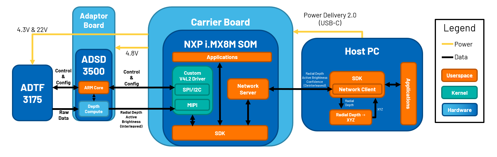
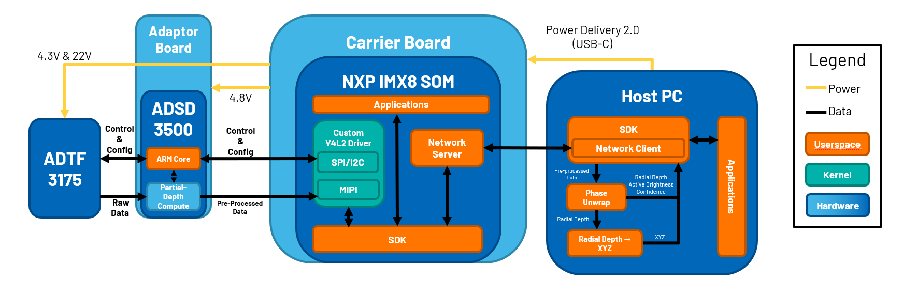

EVAL-ADTF3175D-NXZ User Guide
Attention
This is a draft document in an unofficial fork of https://github.com/analogdevicesinc/documentation
News
Important
Support or Query: tof@analog.com
2024-07-29: Release 5.0.0 is available on GitHub; see ToF/releases
Important
With 5.0.0 the depth compute libraries have been moved to the eval kit hardware you may:
Some host PCs require an externally power self-powered hub due to the increased current usage.
Some host PCs may experience a degradation in frame rate due to available USB bandwidth.
Important
From the ADTF3175D Eval Kit version 4.3.0 ADTF3175 (Crosby) modules supporting the old modes, QMP and MP, are no longer supported. Please check this page for module upgrade information : Link.
User Guide
Analog Devices 3D time of flight (ToF) camera products capture depth information, enabling advanced machine vision applications and allowing people and devices to sense, capture and interact with their spatial environments.
For more information see: Time of Flight Camera – System Overview
Introduction
The EVAL-ADTF3175D-NXZ time of flight (ToF) evaluation kit is showcasing the ADTF3175 module with ADI’s depth ISP, the ADSD3500. The kit supports ethernet over USB connectivity to a PC for real-time visualization, capture and post processing of depth data. The kit includes host PC software (Windows) and an open source multi-platform SDK for custom application development.
Key Features
Resolution: |
1024x1024 TOF sensor |
|
Illumination: |
FOI 81°x81° - 940nm Lumentum VCSEL |
|
Field of view: |
FOV 75°x75° |
|
Operating range: |
0.4 to 4m @ 15% reflectance (native) |
|
Depth Noise: |
<15mm |
|
Accuracy: |
+/- 3mm depth error |
Modes of Operation
See the Modes Table page.
What is included in the kit?
ADTF3175D Evaluation Module
ADTF3175 Module
i.MX8 M Plus SOM (SolidRun)
Camera Interface Board
ADSD3500 Interposer board
16GB flashed microSD card (Inserted in module sd card slot)
USB-C to USB-C cable. Supports PD 2.0, and USB 3.1
Tripod
{kind=link}
System Overview
Quarter-MegaPixel (512x512)

MegaPixel (1024x1024)

Click here for more information on each block
Quick Start
System Information
; USB and Power :
Minimum Requirements
USB 3.0 (5Gbps)
USB Type-C cable
2.0A
Recommended Requirements
USB 3.1 Gen2
USB Type-C cable
3.0A
Note: Do not use USB Type-C to USB Type-A adapters.
; Dimensions : 66mm x 58.6mm x 67.9mm
; Enclosure Drawing : {{ :resources:eval:user-guides:eval-adtf3175d-nxz_drawing_v1.pdf | Link}}
; Laser Safety : Class 1
; Operating Environment : //TO BE COMPLETED//
Index of Pages
Note
These are absolute links to existing wiki pages for the time being.
Support Links
Module and Eval kit questions : `EngineerZone <ez>depth-perception-ranging-technologies/continuous-wave-cmos-time-of-flight-tof/>`__
Software/SDK questions : `ToF/issues <repo>ToF/issues>`__
Lumentum VSCEL Information :
Terms
FOI : Field of Illumination
FOV : Field of View
FPS : Frames per Second
SOM : System On Module
VCSEL : Vertical-Cavity Surface-Emitting Laser